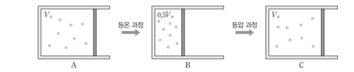

문제:
9. 그림은 실린더에 들어 있는 일정량의 이상 기체의 상태를 A->B->C로 변화시키는 것을 나타낸 것이다. A, B, C의 부피는 각각 V0 , 0.5V0 , V0 이고, A->B 과정은 등온 과정, B->C 과정은 등압 과정이다.
이상 기체에 대한 설명으로 옳은 것만을 <보기>에서 있는 대로 고른 것은?
ㄱ. A->B 과정에서 내부 에너지가 감소한다.
ㄴ. 절대 온도는 C일 때가 A일 때의 2배이다.
ㄷ. B->C 과정에서 흡수한 열량이 A->B 과정에서 방출한 열량보다 크다.